ScoreHub
Construindo uma plataforma financeira modular para análise de crédito, validação de clientes e gestão de serviços digitais.
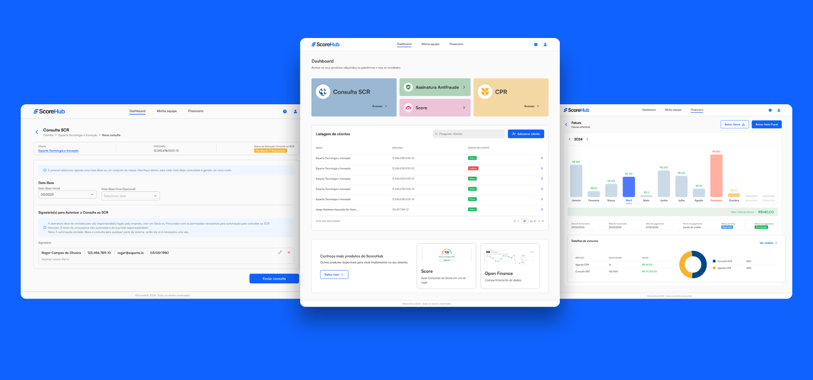
Visão geral
O ScoreHub é uma plataforma B2B desenvolvida para apoiar empresas na concessão de crédito e na avaliação da capacidade financeira de seus clientes, sejam eles pessoas físicas ou jurídicas.
A solução centraliza serviços como Consulta SCR, Agenda CPR, Score, Assinatura Antifraude e gestão financeira em um único ambiente digital, reduzindo a dependência de múltiplas ferramentas e tornando processos financeiros complexos mais acessíveis para os usuários.
Como única Product Designer do projeto, participei desde a concepção da plataforma até a construção dos fluxos, interfaces e componentes que sustentaram a experiência do produto.
O desafio de transformar complexidade financeira em uma experiência simples
Empresas que realizam análise de crédito precisam reunir informações de diferentes fontes, solicitar autorizações, acompanhar consultas e lidar com processos regulatórios sensíveis.
O desafio do ScoreHub era criar uma plataforma capaz de centralizar essas operações em uma experiência única, sem comprometer segurança, clareza ou escalabilidade.
O principal desafio
Não era apenas desenhar telas, mas estruturar uma plataforma modular capaz de acomodar diferentes produtos financeiros com consistência, usabilidade e visão de crescimento.

Mapeamento inicial da plataforma e organização dos primeiros fluxos.
Da estratégia à interface
Atuei como única Product Designer do projeto, traduzindo requisitos técnicos, regras de negócio e informações regulatórias em fluxos compreensíveis para os usuários da plataforma.
Entendendo um mercado altamente especializado
Antes de iniciar a construção das interfaces, realizei uma etapa de pesquisa para compreender o mercado de análise de crédito, plataformas financeiras, sistemas de assinatura digital e produtos SaaS B2B.
Analisei referências como Serasa, plataformas de assinatura digital e sistemas financeiros para entender padrões de navegação, linguagem do segmento e oportunidades de simplificação.
- Como apresentar dados financeiros de forma clara?
- Como orientar usuários em fluxos regulatórios?
- Como estruturar módulos diferentes dentro da mesma plataforma?
- Como preparar a solução para expansão futura?

Primeiros estudos de layout e organização das informações.
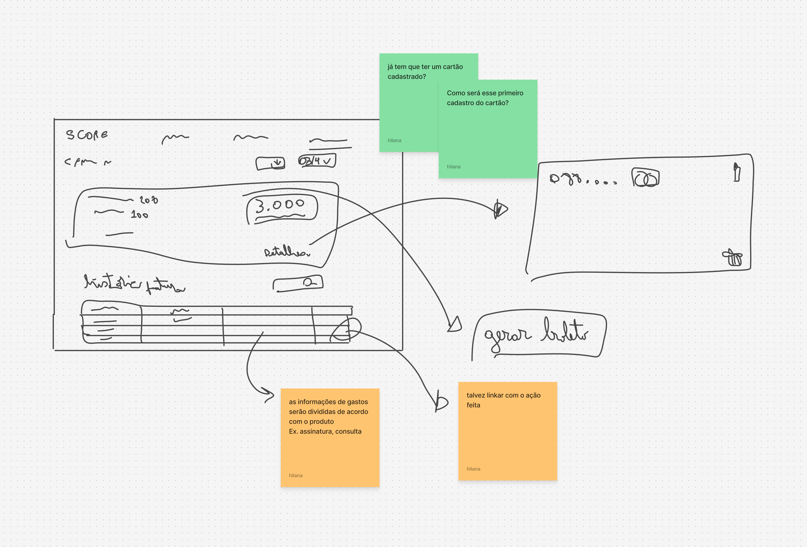
Estudo de planos, monetização e referências de mercado.
Uma plataforma modular, não apenas uma funcionalidade
A plataforma foi estruturada como um ecossistema de serviços financeiros. Cada módulo possui objetivos específicos, mas compartilha padrões de navegação, componentes e lógica de uso.
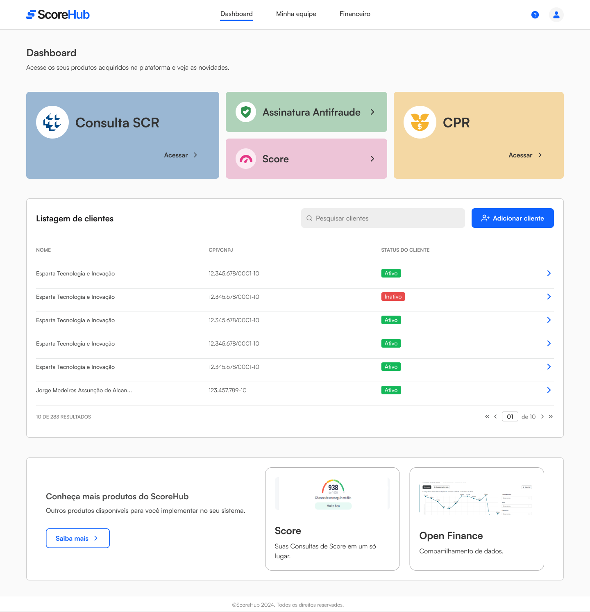
Dashboard principal com acesso aos produtos e listagem de clientes.
Consulta SCR
A Consulta SCR foi um dos módulos centrais da plataforma e passou a ser utilizada por clientes reais, como a GiroTech.
O fluxo precisava contemplar autorização dos responsáveis legais, seleção de datas-base, acompanhamento de status e envio da consulta, mantendo o processo claro mesmo diante de requisitos regulatórios.
Decisões de design
Usei hierarquia visual, mensagens contextuais, status de acompanhamento e organização progressiva das informações para reduzir dúvidas durante o processo.
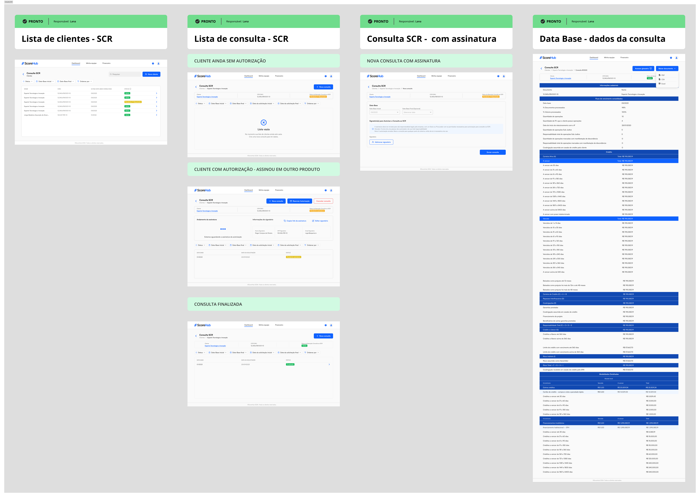
Mapeamento completo do fluxo de Consulta SCR.
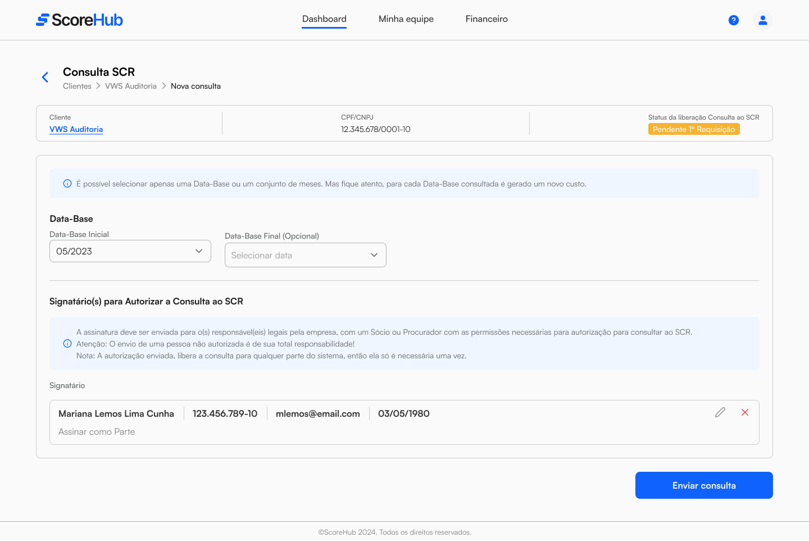
Tela de configuração da consulta e definição dos signatários.
Agenda CPR
O módulo de CPR foi pensado para facilitar a consulta e o acompanhamento de recebíveis registrados, exigindo uma interface capaz de organizar grandes volumes de dados financeiros de forma escaneável.
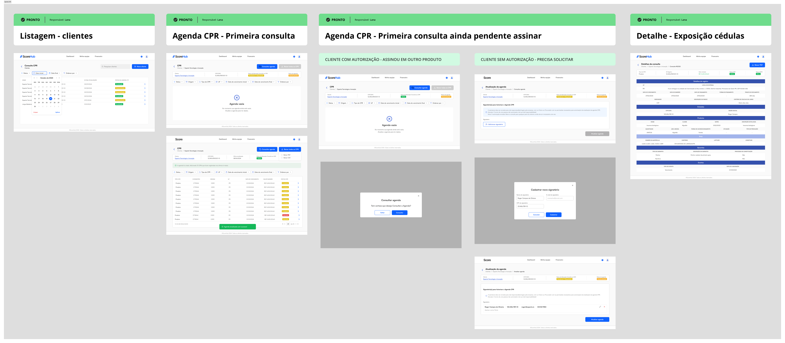
Fluxo da Agenda CPR com variações de status e cenários de uso.
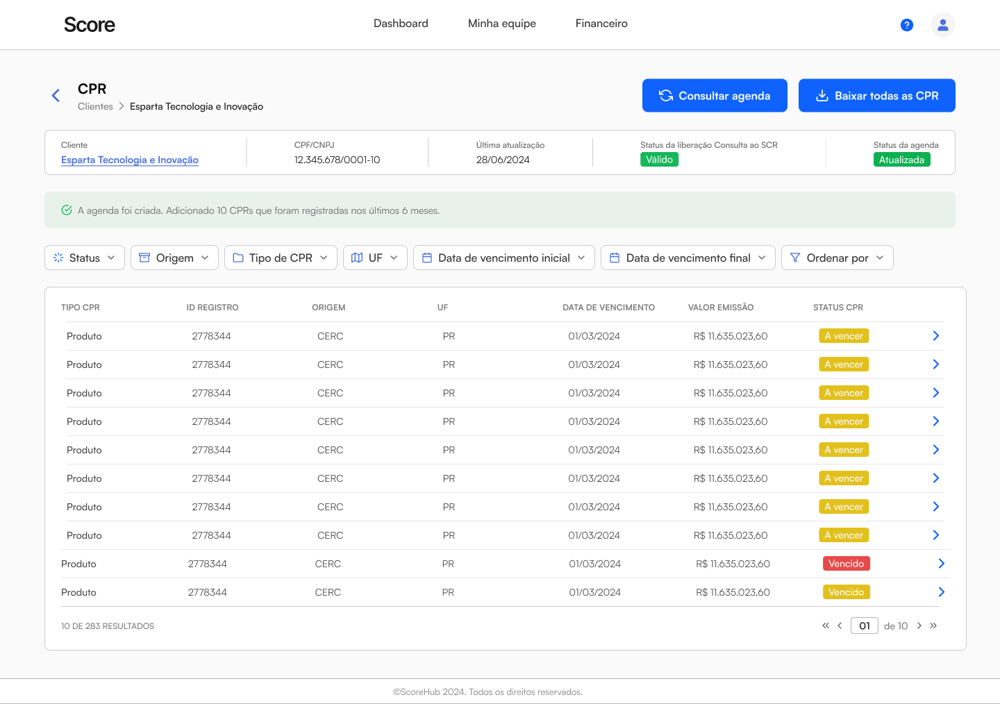
Tabela com filtros, status e informações financeiras organizadas para análise.
Financeiro e consumo da plataforma
Além das consultas, os usuários precisavam acompanhar faturamento, consumo e utilização dos serviços contratados.
A área financeira foi projetada para apresentar faturas, status de pagamento, consumo por serviço e análises visuais de utilização da plataforma.
Por que isso importa?
Em uma plataforma B2B, transparência financeira reduz dúvidas, melhora a previsibilidade e ajuda o cliente a entender o valor dos serviços utilizados.
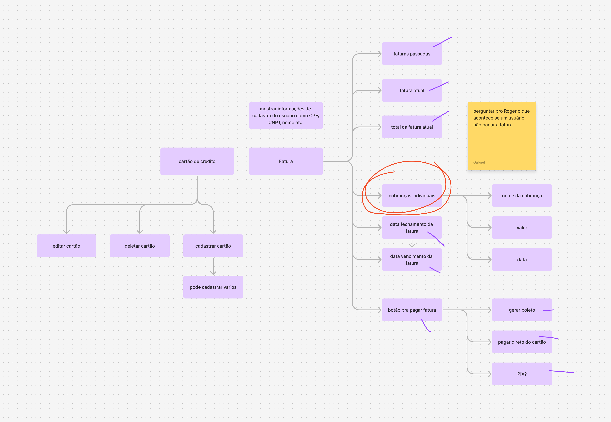
Mapeamento de faturas, cobranças e formas de pagamento.
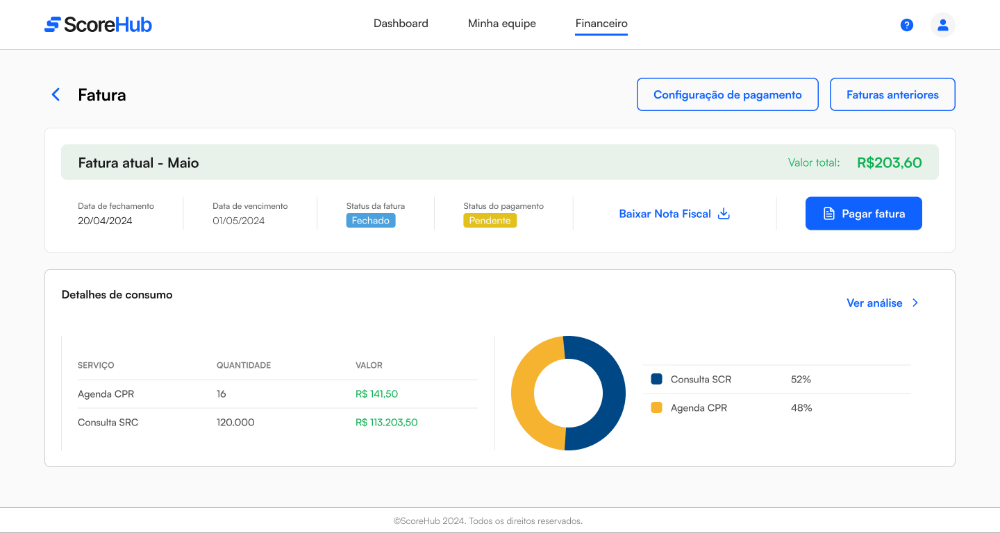
Tela de fatura com consumo por serviço e status de pagamento.
Preparando a plataforma para operação
Para além dos módulos financeiros, também desenhei fluxos essenciais para a operação da plataforma, como login, recuperação de senha, perfil do usuário e gestão de equipe.
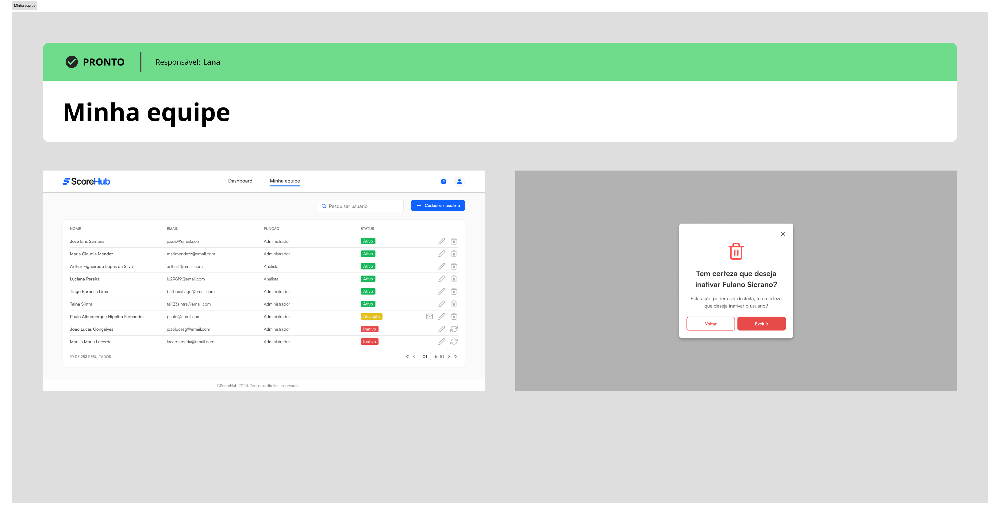
Gestão de usuários, permissões, convites e status de acesso.
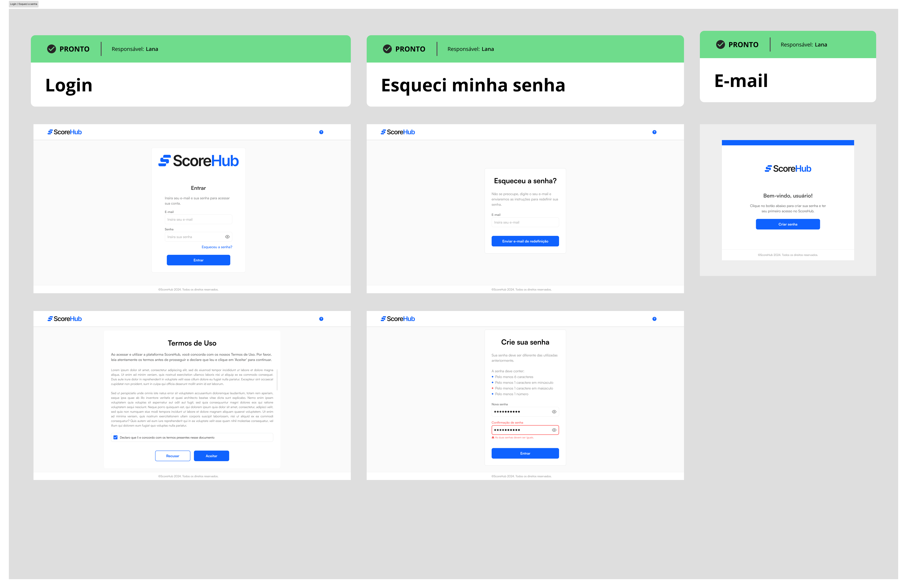
Fluxos de autenticação, aceite de termos e recuperação de acesso.
Construindo consistência para escalar
Com a expansão dos módulos, tornou-se essencial estruturar componentes reutilizáveis e padrões visuais capazes de sustentar a evolução da plataforma.
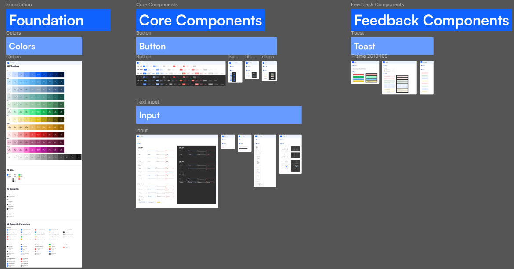
Foundations, componentes principais e padrões de feedback.
Da concepção ao uso real
A plataforma evoluiu de uma iniciativa inicial para um produto utilizado por clientes reais.
O módulo de Consulta SCR passou a apoiar operações de empresas como a GiroTech.
O projeto estabeleceu uma estrutura visual e funcional para expansão de novos módulos.
O que esse projeto consolidou na minha prática
Projetar o ScoreHub reforçou minha capacidade de atuar em contextos altamente especializados, traduzindo requisitos técnicos, regulatórios e de negócio em experiências digitais acessíveis.
O projeto também consolidou minha visão de produto, especialmente na construção de soluções SaaS B2B escaláveis, modulares e apoiadas por um Design System consistente.
Outros projetos
Explore outros produtos e experiências que projetei.